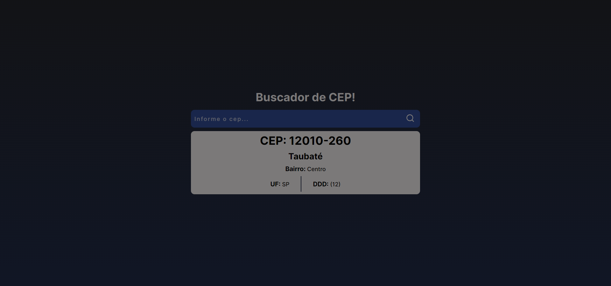
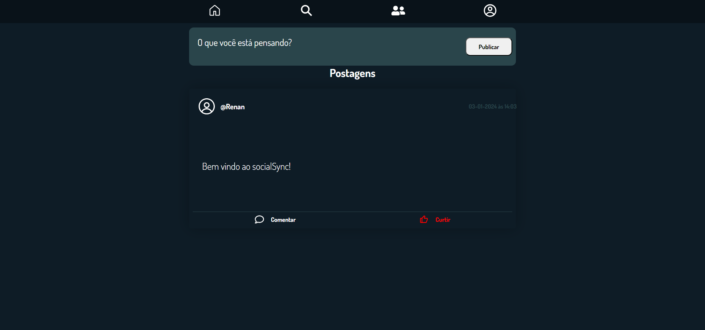
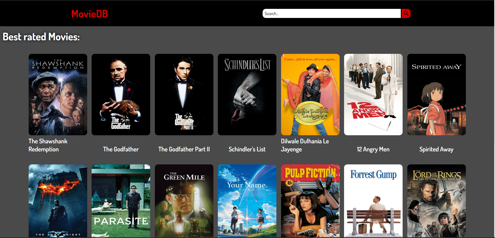
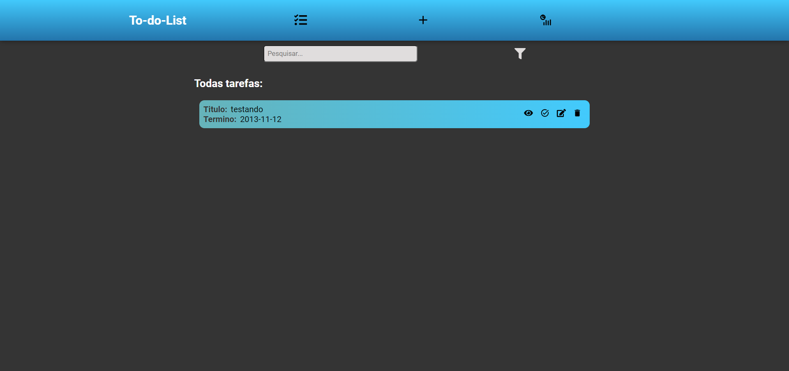
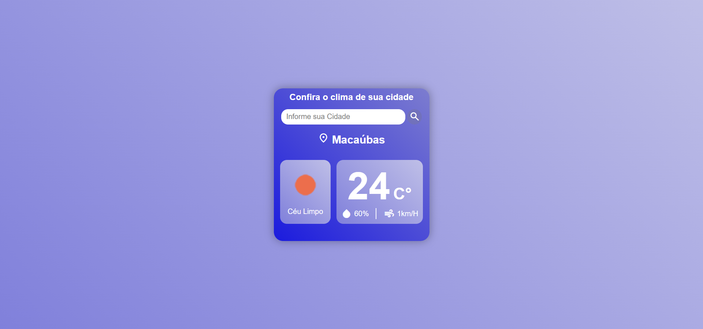
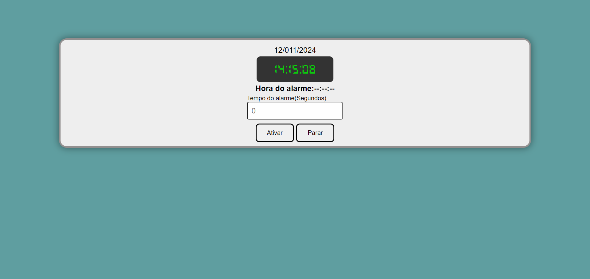

Quem sou?
Sou entusiasta da tecnologia, e atualmente cursando Engenharia de Software desde agosto de 2023. Fascinado pelo potencial transformador da tecnologia, encontrei minha paixão no universo abrangente do JavaScript. Nesse momento estou concentrado em consolidar meu conhecimento no React, buscando me aprofundar cada vez mais nesse framework dinâmico e promissor. Animado com a jornada à frente, estou comprometido em aprimorar minhas habilidades e, quem sabe um dia, trabalhar em projetos de refência.
Projetos .
Buscador de CEP
Esse projeto marca minha entrada no superset TypeScript com o tradicional framework React.js. Apesar de ser bem simples, e ter como finalidade apenas abordar conceitos de tipagem forte que o Ts nos proporciona, não abrir mão de um layout intuitivo e de fácil uso. Além disso foi usada a API do viaCep como fonte de informações.
React.js
TypeScript
API Pública
Social-Sync
Social-Sync, minha primeira incursão na integração de MongoDB, Node.js e React, é uma rede social compacta e simples de se usar. Oferece recursos de cadastro, postagens, interatividade (curtidas e comentários), possibilidade de seguir e ser seguido por outros usuários, e construção de perfis. O projeto visa evoluir com melhorias de segurança, desempenho e adição de novas funcionalidades
React.js
Node.js
MongoDb
Movie-db
O MovieDB é um projeto compacto de filmes que Oferece aos usuários a funcionalidade de explorar e pesquisar informações sobre diversos filmes. Desenvolvido em React, o projeto utiliza a API do The Movie Database (TMDb) para acessar dados abrangentes sobre filmes, incluindo sinopses, abrangência, classicação, etc.
React.js
API Pública
Lista de tarefas
Esse projeto é uma típica aplicação de lista de tarefas desenvolvida em React, que permitem aos usuários, de forma simples e intuitiva adicionar, editar, e excluir tarefas, com a conveniência de salvar suas listas na memória do navegador.
React.js
Open-Weather
O Open-Weather é mais uma das minhas primeiras vivências no desenvolvimento com JavaScript puro. Esta aplicação permite aos usuários pesquisar por suas cidades e acessar informações sobre o clima em tempo real, utilizando a API do OpenWeather, oferecendo dados como temperatura, velocidade do vento, umidade, entre outros
JavaScript
API Pública
Cronômetro
Um dos meus primeiros projetos no mundo javaScript, desenvolvido com foco na simplicidade e usabilidade, a aplicação oferece uma interface intuitiva para que os usuários configurem facilmente o alarme para o tempo desejado.
JavaScript
Sou formado em Administração e atuamente estou me habilitando nessas tecnologias :
HTML
CSS
javaScript
React
git
Node
em processo ...